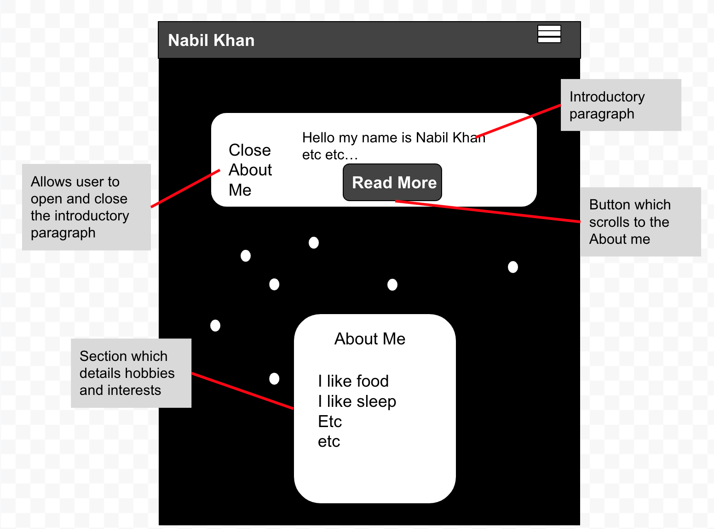

Large Coursework
Nabil Khan
How did you approach the subject? What does your site say about future you?
My site says that the future me will be an astronaut that has worked for companies such as SpaceX and NASA. As well as this, I have completed my BSc Computer Science Degree and have also gone on to complete a MSc Artificial Intelligence Degree. I approached the subject from the perspective of someone who has come out of university and went straight into being an astronaut
Who is your audience?
I am targeting this portfolio to other companies which are involved in sending people to space for research, evidently shown by me listing my missions that I completed
Give (at least) 3 online portfolios you looked at when creating your website and summarise your thoughts about them
https://www.moritz-petersen.de/
I really liked the design of the boxes on mortiz petersens online portfolio as it looked sleek and modern, the only thing I changed however were the colours where black/grey is white and white is black/grey because my background was already black
https://www.danmachado.com/
I took inspiration from dan machados hamburger menu and how it comes from the top of the screen. This is unique as hamburger menu's typically come out from the sides and also I just liked that it came from the top and covered most of the elements, it's almost like blinds on a window
https://theericalauren.com/
I liked how all the elements of the website faded in as soon as you load in as it's like slowly revealing your portfolio rather than instantly being in your face
Give one resource about how to create an online portfolio that you referred to
https://www.wix.com/blog/creative/2020/01/graphic-design-portfolio-tips/
The quality over quantity factor made me choose 3 pages instead of 5 as I wanted to prioritise the quality of my pages, not the amount.
Give (at least) 3 ways in which you have ensured accessibility for your website. If you have used a WCAG tool, or evaluated it manually, give the results of that evaluation.
-
I have used semantic elements such as nav and section which is important because it makes it easier for screen readers to read your code
-
I have used high contrast colours for the text and the background colour e.g. White and Dark Grey/Black and I passed the WCAG contrast check using this website https://webaim.org/resources/contrastchecker/
-
I used html lang = "en" which makes it easier for screen readers to read the content appropriately as they know off the bat which language it is.
-
I used image alt tags which ensures that in moments when images cannot be seen or are unavailable, screen readers can pick the alt tag of the image up and read out the text
Give 1 way in which you have made your site easy to use or navigate
I made my site easy to navigate by adding cursor pointers to elements that the user can interact with. As well as this, I created a hamburger menu with a familiar icon which means that users (should) know that it opens up a navigation bar
Give an example of something that you had to learn or research when creating the website. How did you find it out? From where? Did you take the examples directly, or did you modify them?
Before beginning the task, I did not know much JavaScript so I needed to learn DOM manipulation. I learned this from YouTube videos, most notably from Traversy Media and FreeCodeCamp. For every example they showed, I practiced creating the example again from memory, then altering it with existing knowledge that I had e.g. changing CSS styles. This way it was burned into my head.
What resources does your work use? What libraries, plugins, are included?
I did not use any extra resources
State 3 things that you think worked particularly well in your work
- I really like the navigation bar as it turned out exactly how I wanted it to turn out
- I think the Grid on the references page turned out great, especially the responsiveness and the twitter style posts
- I quite like the smooth scrolling feature in css on my about page, it's not boring and I thought it would require much more code but it's literally just one line of code
- I believe I adapted code quite well
State 3 things that you think might be improved. How would you do them differently another time? How would you fix them given more time now?
- Given more time, I would definitely do more complex JavaScript as the code I wrote is quite simple to me.
- I also didn't know how to get the animation delay to properly work, I wanted the content in the body to load later than the nav bar, however I couldn't get it to work so I just scrapped the idea
- Lastly, I think I will research more into how to make text more responsive also as I'm always so confused on which units of measurements to use since there's so many to choose from.
Given more time, I could definitely learn much more JavaScript, I could also spend more time debugging the animation delay and also I could spend time playing around with units of measurement to feel which ones I prefer for which task.
Reference
Local link to website
Index Low Fidelity Wireframe
About Low Fidelity Wireframe
Reference Low Fidelity Wireframe
Index High Fidelity Wireframe
About High Fidelity Wireframe

Reference High Fidelity Wireframe
W3Validator